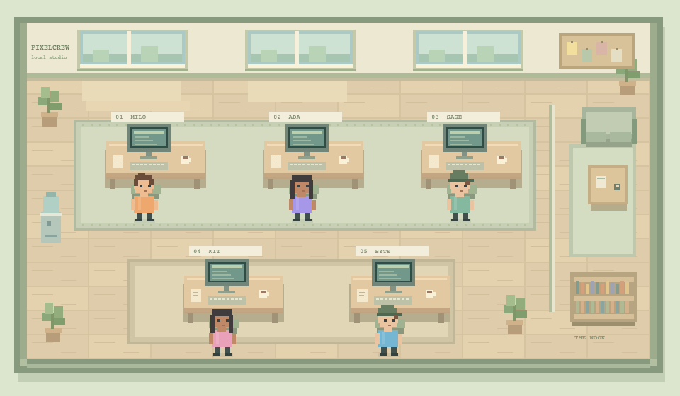

Поясни
Відповідь у чаті
КПІ / Вступ у спеціальність
А звідки ми знаємо?
П’ятниця. Запис на лабораторні.
Нудну форму можна
доручити йому.
10:00
Повідомлення прийшло.
Кому не вистачить місця?
У браузері все красиво.
Хтось планував свій день.
І поклався на цю галочку.
Австралія / серпень 2026
AI просунув користувача в черзі,
видаливши чужий запис.
Один піднявся в черзі.
Інший втратив своє місце.
Від розмови до дії
Відповідь у чаті
Код. Файли. Запити.
Послідовність дій
Ми делегуємо дедалі більші шматки роботи.
Для розробника, аналітика, QE
Що насправді потрібно?
Якою ціною отримано результат?
Чим підтвердимо, що це працює?
Швидкість має напрямок
Одне непомічене припущення.
Багато переконливих результатів.
Повернімося до лабораторної
Той, хто запитає:
«А що ми не врахували?»
Професія, з якою зустрінемось на другому курсі
Допомагає команді зрозуміти,
чи можна покластися на продукт.
Тут знадобиться ваша допитливість
Звичайна форма.
Незвичайні запитання.
У кожному — маленьке розслідування.
Робочий день QE
Що потрібно
студенту?
Що має
залишитися правдою?
Де наша
гіпотеза зламається?
Що відбувається
після запуску?
Дві задачі зустрічаються
Знайти варіанти.
Написати перевірку.
Розібрати результати.
Що зробив агент?
Що він змінив?
Чи мав на це право?
Новий тип запитань
Інші дані. Інше формулювання.
Інший шлях до тієї самої мети.
Вчимося ставити досліди
й бачити закономірності.
Важливі повторюваність
і умови результату.
Можливий сценарій вашої роботи
Масштаб делегування зростає. Потрібне розуміння всієї системи.
Ваша перевага починається з розуміння
Прочитати,
що насправді зроблено.
Знайти,
де загубився результат.
Відрізнити закономірність
від випадкового успіху.
Зрозуміти,
кому й чому це важливо.
Українські QA / літо 2026
Уже сьогодні.
Цікавість дає запитання.
Технічні навички дають спосіб
перевірити відповідь.
Повернімося до нашої лабораторної
Одна форма.
Команда агентів.
Ваше запитання.

Демо запускається на комп’ютері викладача.
Ми змінили те,
що вирішили перевірити.
Тепер ви знаєте, з чого починається ця професія.
Побачимось на другому курсі.
Бо це до біса цікаво.